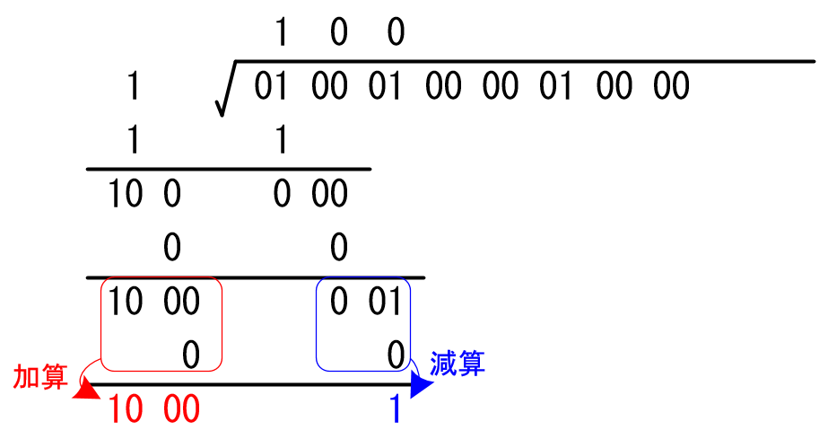
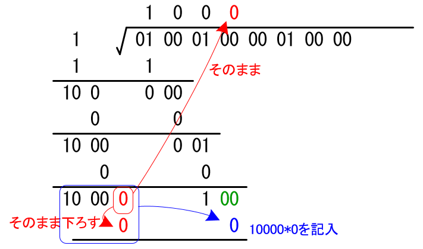
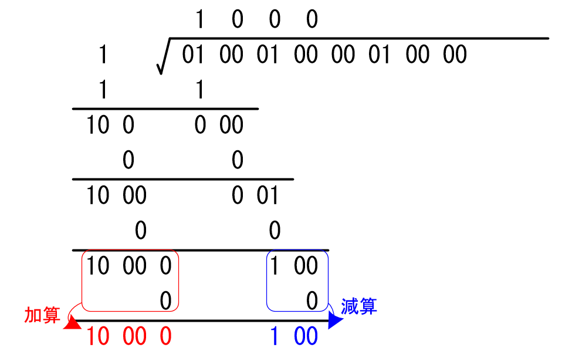
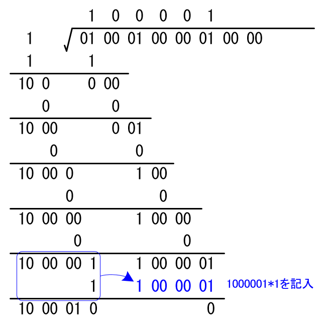
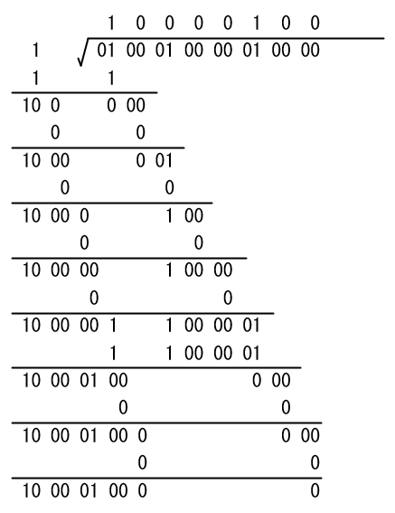

Z80で平方根を求めるには？





平方根 10000100 が求まりました。
これは二進数なので、10進数に直すと 132 です。132*132 = 17424 になりますね。
綺麗に端数無く求まる値だったため、途中から値が 0 になりました。
小数部を持つような平方根だと、0 にならずに続くイメージです。必要な桁まで繰り返し計算出来ます。
計算を打ち切れば、それ以下の桁を切り捨てた結果となります。四捨五入が必要なら 1桁余分に求めて、
1が立ってたら繰り上げれば良いでしょう。
と、計算方法が分かったところで、今度はこれを Z80 のコードに落としてゆきます。
[前へ][戻る][次へ]